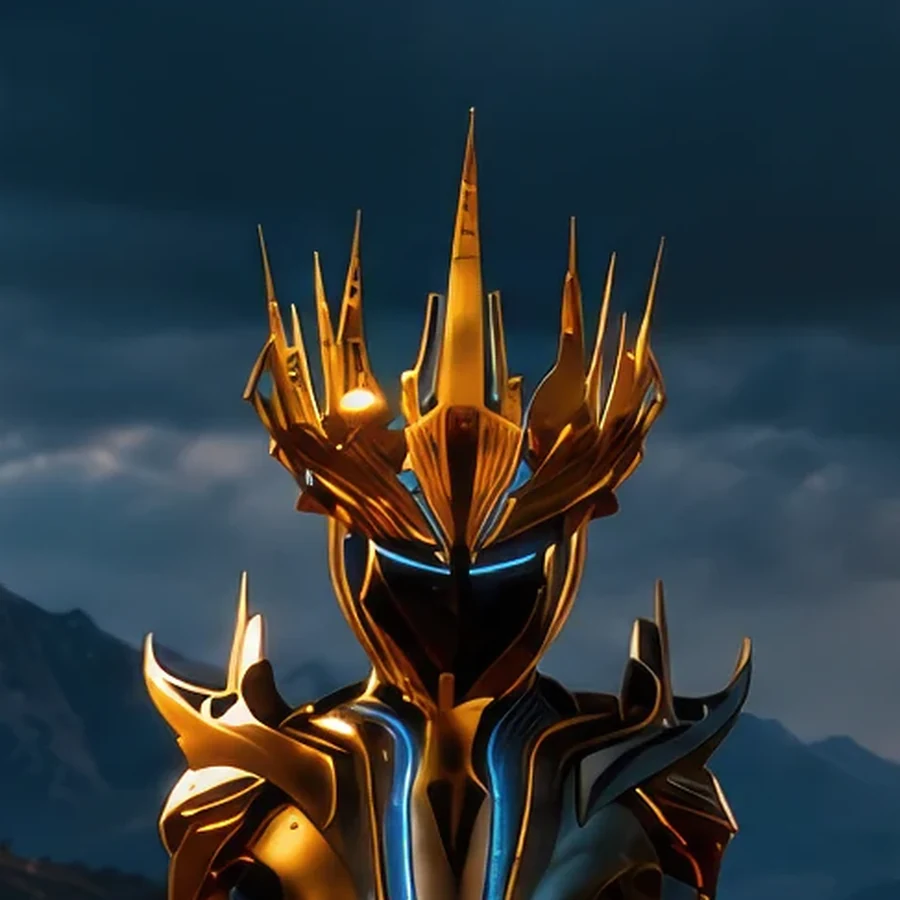
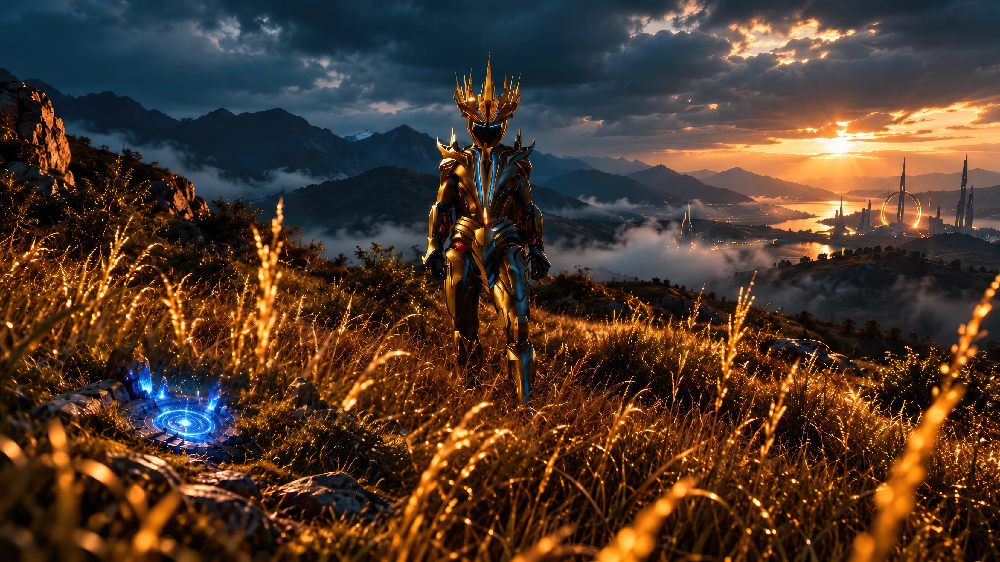
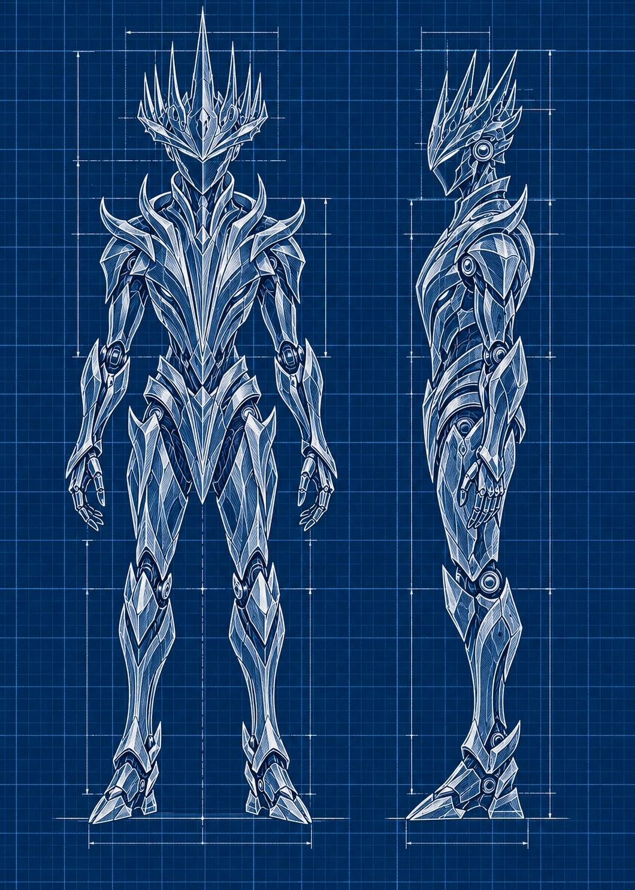

Field Observation
A luminous blue ring lies in the grass well left of the hero.
 ©
©
GENEZYS ARCHIVE · EARTH 1 · Legionnaire
Interval Reaper
Identity & combat record
Archive node 01 / 05

Archive record
Quenith learned to see the space between two heartbeats, and to cut there. The Moment Slice lands on the flanks before the enemy in the middle even notices its strength is gone. Like every knight of the Exalted Order, Quenith has sworn to guard one Still Hour, and still waits for it to come.
Combat signature
Cuts through fabric of duration: Deals 50 pierce damage to enemies on the edges. The enemy in the middle loses 40 Cosmara.
Genezys 03:01 ™&©2026LEGIONS
Recovered visual record
Archive node 02 / 05

Full frame available // rotate device to landscape
Technical archive
Archive node 03 / 05

Classified field intelligence
Archive node 04 / 05
FIELD REPORT // SURFACE ANOMALY
Field Observation
A luminous blue ring lies in the grass well left of the hero.
Environment
Object Analysis
Key Findings
Motion archive
Archive node 05 / 05
Motion record not yet recovered